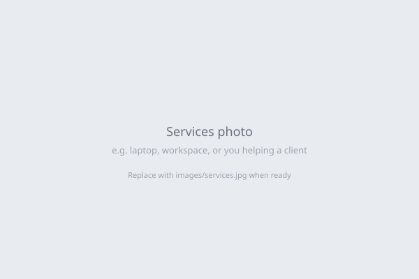
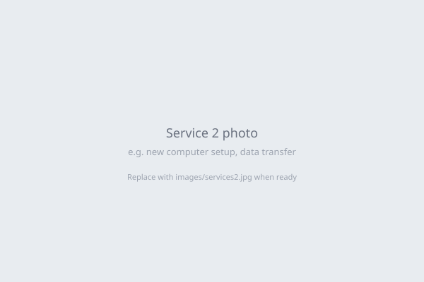
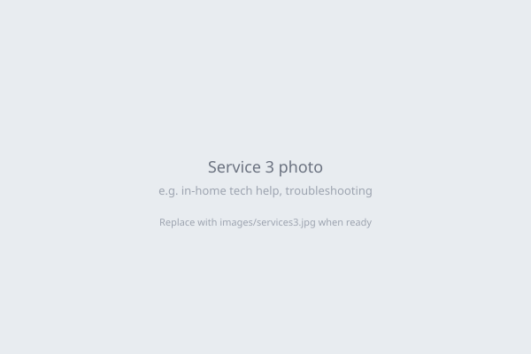

Services
Here are the most common ways I help people get their computers and devices working again:

In-Home Tech Help
Technology issues often involve multiple devices and are easier to solve in person.
- WiFi troubleshooting
- Printer issues
- Device setup
- General troubleshooting

Computer Performance Upgrades
If your computer is slow or takes several minutes to start, it may still be using an old hard drive.
- Speed up your computer (including SSD upgrades when needed)
- System cleanup and optimization
- Startup performance improvements
Many systems feel dramatically faster after this upgrade!

New Computer Setup & Data Transfer
Buying a new computer shouldn't mean losing your files or starting over.
- File and photo transfer
- Email setup
- Printer setup
- Basic software configuration
Common Problems I Fix
- Computer takes several minutes to start
- Printer won't connect
- Wi-Fi is slow or keeps disconnecting
- New computer needs to be set up
- Photos or files need to be transferred
- Email or passwords not working correctly
- Devices not talking to each other (computer, printer, phone)
If you're dealing with any of these issues, you're not alone — these are some of the most common problems I help people solve every week. I can get everything working again!
Why Choose Westshore Digital
Clear communication
I explain what is happening and what your options are before doing
any work.
Reliable service
I schedule appointments clearly and on time.
Practical solutions
My goal is to fix the real problem, not apply temporary patches.
About Westshore Digital
Local computer engineer — helping residents with everyday technology.
I'm Kyle Dennis — trained as a computer engineer, working in the industry as a professional software engineer. I grew up helping family and friends with the same stuff that drives most of us crazy: slow computers, a printer that just won't connect, lost passwords, Wi‑Fi that drops, and email that never quite does what you want. I've sat at the kitchen table with my grandmother more times than I can count, and I get how important it is to have someone patient, clear, and respectful in your home.
Most of the people I help simply want their technology to work the way it should — without stress or confusion.
Westshore Digital is built around that. You're not getting a random technician — you're getting someone who treats your time and your trust seriously. I'll explain what's going on in plain English, show you what I'm doing when it makes sense, and I'll never leave a job until you're comfortable. Your peace of mind and a working setup are what I care about most. Westshore Digital proudly serves St. Petersburg, Clearwater, Largo, and surrounding Pinellas County communities.
Simple Pricing
Most service visits typically range between $75 and $150, depending on the issue.
You'll always know the cost before any work begins. My goal is to solve the problem clearly and efficiently — not run up the clock.
If your computer is slow, acting strange, or you're setting up a new one, feel free to call or text and describe what's happening.
Service Area
Based in St. Petersburg, I provide in-home tech support throughout Pinellas County, including nearby communities.
Areas I Serve
Clearwater • Dunedin • Safety Harbor
Largo • Pinellas Park • Seminole
St. Petersburg • Gulfport • Palm Harbor
And nearby Pinellas County communities
Don’t see your town? If you're nearby in the St. Petersburg or Clearwater area, feel free to reach out — I likely serve your location.
Contact Me
If your computer or technology isn't working the way it should, feel free to reach out. I'm happy to help!
You can call, text, or send a message below — whatever is easiest.
Phone / Text:
(727) 543-8848
Email:
contact@westshoredigitalfl.com
Westshore Digital provides in-home computer help, computer repair, troubleshooting, tech support, computer upgrades, new computer setup, and data transfer services across St. Petersburg, Clearwater, Largo, Pinellas Park, Dunedin, Safety Harbor, Seminole, and nearby Pinellas County communities.